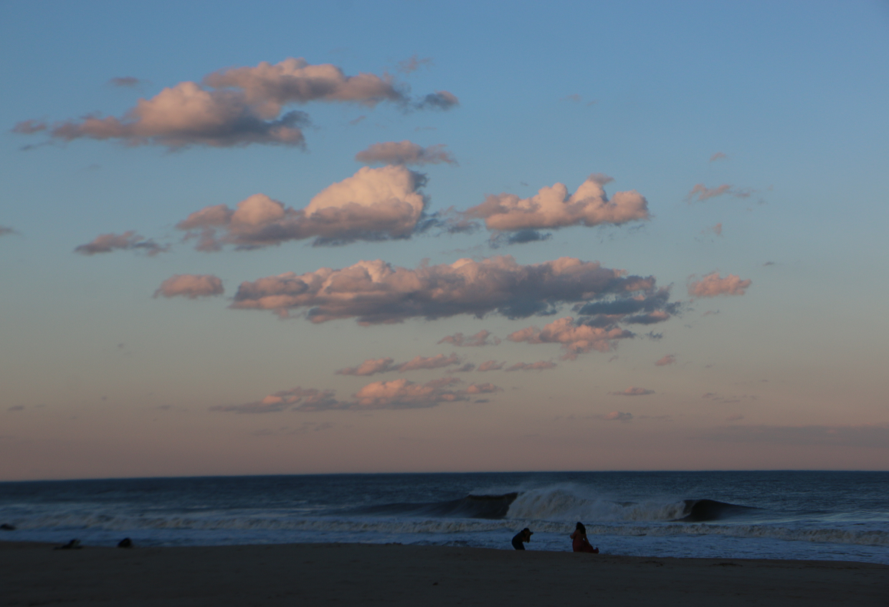

- About Me
- Skills
- Featured Projects
- Contact

This blog will show
different
kinds of work
Skills
Featured Projects
Here's a selection of the projects I'm most proud of:
- Project 1: A web application built using React and Node.js. Check it out here.
- Project 2: A data visualization dashboard using Tableau. View the dashboard here.
- Project 3: A personal blog platform designed in Django. See the live blog here.